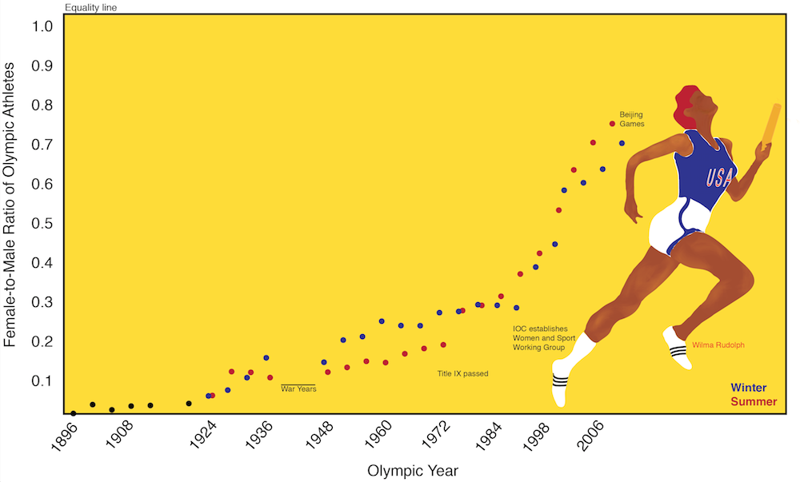
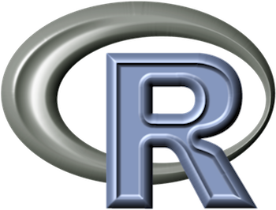

Stephanie A. Kovalchik
Statistician, Developer, Data Artist

Source: Kovalchik, S. (2012). Men's records and women's: are the women better already?: Moving towards a gender‐neutral Olympics. Significance, 9(2), 18-23.
Featured Work
Policy Researcher
https://www.rand.org

R Developer
https://github.com/skoval
Tennis Analyst
https://github.com/skoval/deuce